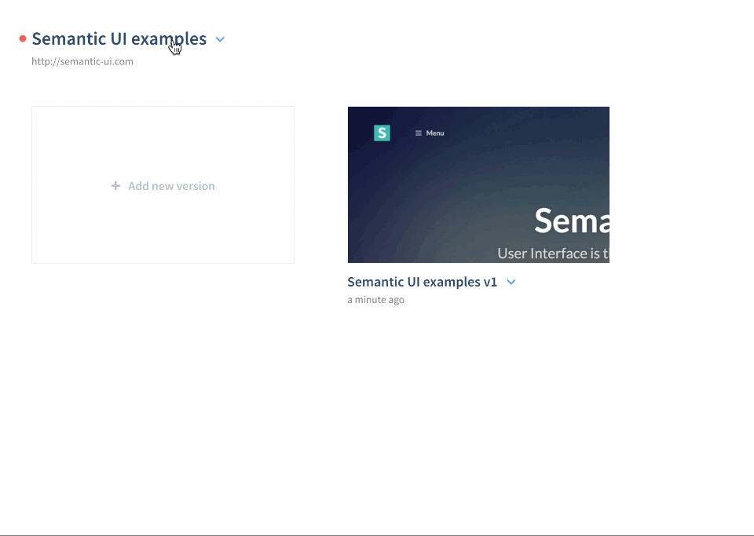

You can get the the latest version from the official Wordpress Plugin Directory.
After installing and activating it as any other Wordpress plugin, it is also necessary to connect the plugin with Finch. This is done by registering your Finch project's API credentials in the plugin settings view.
The API credentials is a pair that consist of an API key and an API secret. Both of these can be found under the project options dropdown.

Finding your API credentials
Don't tell your API credentials to anyone!
Copy and paste your API credentials to their respective fields in Settings -> Finch screen in the Wordpress Dashboard.
If there's a problem, recheck the credentials you've provided. If problems still persist, feel free to contact us!